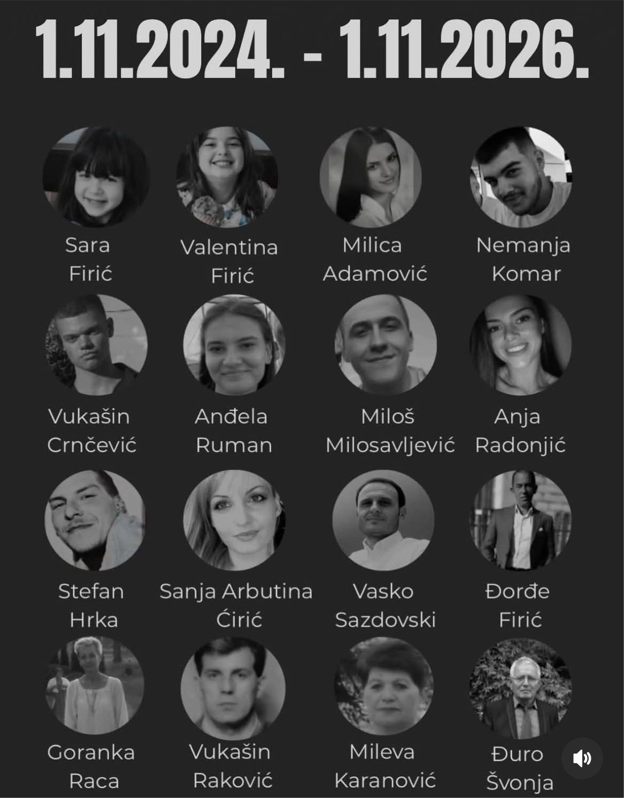

Världen
Delvis obekräftatTystnad i regnet – Serbien minns de 16 döda i Novi Sad, två år efter raset

Två år efter att betongtaket vid den nyrenoverade järnvägsstationen i Novi Sad rasade och dödade 16 människor samlades tusentals i regnet framför stationen för en tyst minnesstund. Olyckan blev starten på de stora protesterna i Serbien, och årsdagen kommer bara en vecka efter ett val som enligt flera källor förändrat landets politik.
Den 1 november 2024 rasade betongtaket över entrén till den nyrenoverade järnvägsstationen i Novi Sad i norra Serbien. 16 människor dog. På söndagen, exakt två år senare, samlades tusentals människor i regnet framför stationen. En bild från platsen visar ett hav av paraplyer framför stationsbyggnaden, med en enda kommentar: "Tystnad...".
Minnesstunden hölls kring klockan 11.52, den minut då taket föll, enligt en sammanfattning på X och minnesinlägg som sprids med just klockslaget. The National Independent, som bevakar västra Balkan, rapporterade under förmiddagen att ceremonin pågick.
Sista gången tillsammans
I två år har serbiska studenter och medborgare hållit 16 minuters tystnad, en minut för varje död, vid protester över hela landet. På lördagskvällen hölls den sista sådana tystnaden vid juridiska fakulteten i Belgrad, som varit ett av protesternas centrum, enligt WestBalkanNews.
Känslan av ett avslut märks hos deltagarna. @MionaDragonfly, som deltog, skriver att man nu samlas igen, troligen för sista gången så här, alla tillsammans. Även utanför Serbien delas minnet, och @GradascevicEmin skriver om "sexton minuter, för varje förlorat liv".

En vändpunkt för Serbien
Olyckan blev mer än en tragedi. Stationen var nyrenoverad, och ilskan över raset blev startskottet för en lång protestvåg i Serbien. Al Jazeera beskriver raset som en vändpunkt för det serbiska samhället och påpekar att årsdagen infaller bara en vecka efter ett val som avsatte landets mäktigaste politiker. Enligt The National Independent ledde protesterna till slut till att det styrande partiet SNS:s 14 år vid makten tog slut. Rättsprocesserna om byggfelen pågår fortfarande.
Flera länders diplomater uppmärksammade årsdagen och hedrade offren, bland andra Kanadas ambassad i Belgrad och Schweiz ambassadör Anne Lugon-Moulin.
Så vet vi det
Källmix: 10 källor – 2 primärkälla, 2 ögonvittne, 1 analys, 2 journalist, 1 etablerad media, 2 debattör. Etablerad media utgör 1 av 10.
- Etablerad media Al Jazeera English: årsdagen en vecka efter valet
- Primärkälla Kanadas ambassad i Serbien hedrar offren
- Primärkälla Schweiz ambassadör Anne Lugon-Moulin om årsdagen
- Ögonvittne Bild från minnesstunden vid stationen: "Tystnad..."
- Ögonvittne Deltagaren @MionaDragonfly: "kanske sista gången alla samlade"
- Journalist The National Independent: minnesceremonin pågår i Novi Sad
- Journalist WestBalkanNews: sista 16 minuters tystnad vid juristfakulteten i Belgrad
- Debattör @GradascevicEmin: "Sexton minuter, en för varje liv"
- Debattör Minnesinlägg med klockslaget 11.52
- Analys X-sammanfattning: de sista 16-minuterstystnaderna
Att valet för en vecka sedan avslutade det styrande SNS:s långa tid vid makten bygger på Al Jazeera och ett nyhetskonto för västra Balkan; vi har inte gått igenom valresultatet i detalj. Uppgiften om tidpunkten 11.52 bekräftas av en minnesgrafik som delas på X och av en X-sammanfattning. Antalet deltagare har vi inga säkra siffror på.
Fördjupa
Frågorna öppnar Grok i en ny flik med artikeln som underlag. AI-svar kan innehålla fel, så kontrollera mot källorna.
Läs vidare
Uppdateringslogg
- 12:25 – Artikeln publicerad.